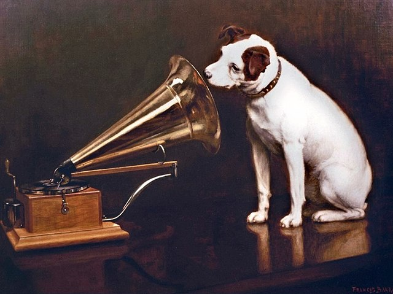

Boas-Vindas à nossa História...
Os Fundadores
Tudo começou em uma conversa entre dois irmãos que eram amantes da cultura e boa musica,
essa paixão era tão forte que se expandiu para além de um hobbie para se tornar um negócio,
pois viram então em suas coleções de disco uma forte forma de trabalharem com o que amam.
Nascendo assim a Loja OLDISCO onde a Garagem foi suas primeira loja.
A loja se expandiu para além de uma garagem, além de uma cidade, conquistando assim reconhecimento em todo um país.
Discos foram autografados por famosos da musica da época, dando cada vez mais exclusividade em seus produtos.
Quanto mais o negócio se expandia eram feitas parcerias grandiosas que levaram a loja para um nível mundial.
Nesta caminhada o grande marco da empresa foi o fechamento da parceria com a marca de Gramofones His Master's Voice.
Tornando assim o principal revendedor da marca.
HMV
His Master's Voice ( HMV ) era o nome de uma grande gravadora britânica criada em 1901 pela The Gramophone Co. A frase foi cunhada no final da década de 1890 a partir do título de uma pintura do artista inglês Francis Barraud, que retratava um cachorro chamado Nipper ouvindo um gramofone de disco de corda e inclinando a cabeça. Na pintura original e não modificada de 1898, o cachorro estava ouvindo um fonógrafo cilíndrico.
Os Socios
A loja manteve sua tradição combinado com a modernidade. Hoje administrada por James Joe, um dos fundadores junto com seu filho Willian Joe. Tendo expandido em 120% as lojas da OLDISCO e expandido os produtos para outras áreas. Seu filho e socio teve uma brilhante ideia nos projetos de expanção da empresa, Assim criando a OLDISCO RECORDS, a gravadora mundialmente reconhecida e admirada.